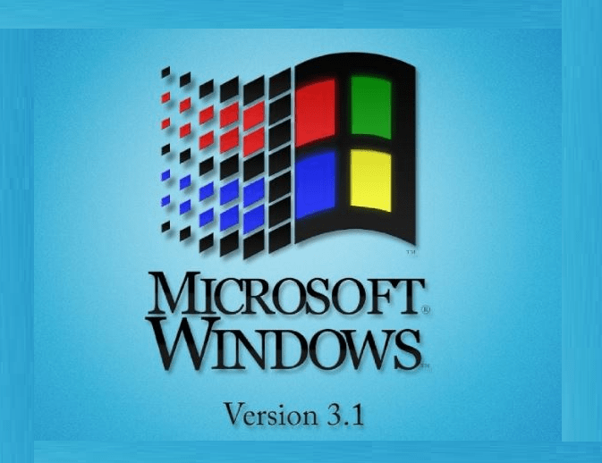
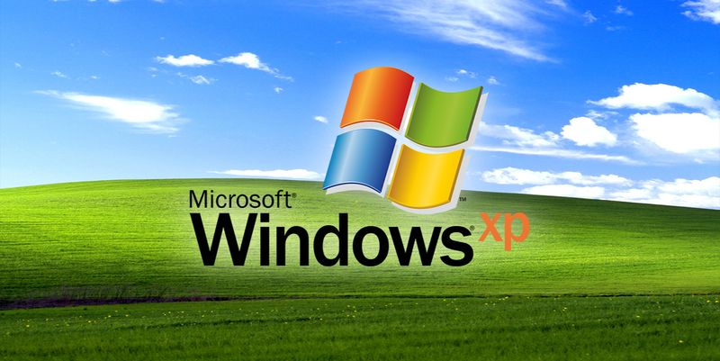
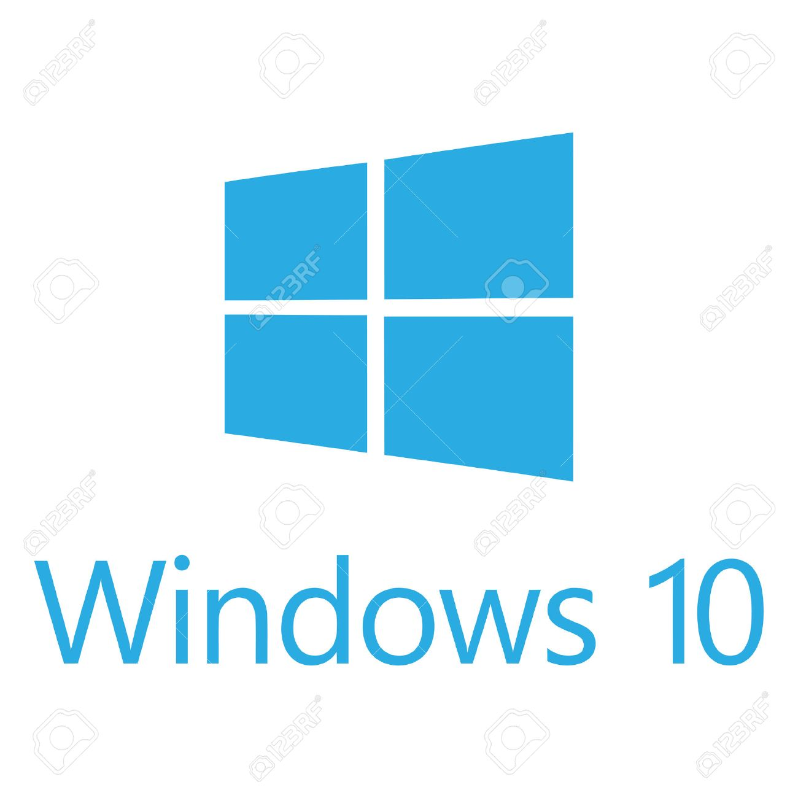

Versiones de Windows.
Windows 3.1
Windows 3.1 (nombre en código originalmente Janus), publicado el 6 de abril de 1992, introdujo una TrueType fuente del sistema (y un conjunto de fuentes altamente legibles), lo que efectivamente hizo ventanas viable auto-edición plataforma por primera vez. Una funcionalidad similar estaba disponible para Windows 3.0 a través de Adobe Type Manager (ATM) de la fuente de Adobe

Windows 98
La primera edición de Windows 98 fue designada por los números de versión internos 4.10.1998, o 4.10.1998A si había sido actualizado con el CD de seguridad de Microsoft. Windows 98 Segunda Edición está designado por los números de versión internos 4.10.2222A ó 4.10.2222B si había sido actualizado con el CD de seguridad de Microsoft. El sucesor de Windows 98 es Windows ME .

Windows XP
Windows XP (Windows Experience) es una versión de Microsoft Windows, basado en Windows 2000 y con importantes mejoras. Fue lanzado al mercado el 25 de octubre de 2001. En agosto de 2012, tenía una cuota de mercado de 46,33%, y fue superado por Windows 7 que ya tenía un 46,60% de la cuota de mercado. En diciembre de 2013, tenía una cuota de mercado de 500 millones de ordenadores. Las letras "XP" provienen de la palabra eXPeriencia (eXPerience en inglés)

Windows Vista
La aparición de Windows Vista se produjo más de cinco años después de la introducción de Windows XP, es decir, el tiempo más largo entre dos versiones consecutivas de Microsoft Windows. La campaña de lanzamiento incluso fue más costosa que la de Windows 95, ocurrida el 25 de agosto de 1995, debido a que ésta incluyó además otros productos como Microsoft Office 2007 y Exchange Server 2008. El sucesor de Windows Vista fue Windows 7, que fue lanzado mundialmente el 22 de octubre de 2009.

Windows 10
Windows 10 es el último y vigente sistema operativo desarrollado por Microsoft como parte de la familia de sistemas operativos Windows NT.8 Fue dado a conocer oficialmente en septiembre de 2014, seguido por una breve presentación de demostración en la conferencia Build 2014. Entró en fase beta de prueba en octubre de 2014 y fue lanzado al público en general el 29 de julio de 2015.